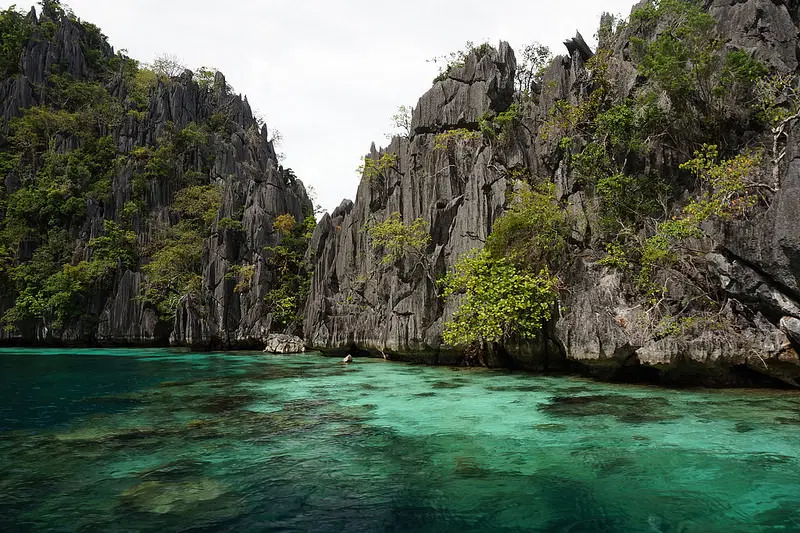

Palawan
with
our top 4 booking places
El Nido

You will find dramatic “over water” scenery in El Nido, located on the northernmost tip of mainland Palawan. This place is not just about pretty sandy beaches and mesmerizing waters. Its islands are filled with towering karst mountains that serve as the perfect backdrop for adventures in this tropical paradise.
Book nowPuerto Princesa
Puerto Princesa is the capital and major flight gateway in Palawan, especially popular among El Nido-bound tourists. Stay for a few days to explore beautiful spots around the city. Start with a trip to Puerto Princesa Underground River, the 2nd longest navigable underground river in the world, listed as a World Heritage Site by UNESCO and New7Wonders of Nature. Then, spend a day beach bumming and snorkeling on an island hopping tour around Honda Bay. Don’t leave without exploring sights in the city center and feasting on fresh seafood in many beachside restaurants.
Book nowCoron & Calamian Islands
In contrast to El Nido’s amazing “over water” views, go to Coron to see stunning underwater views. Here, you can see colorful coral gardens, pristine waters, lots of marine life and even sunken WWII Japanese shipwrecks. Coron can hold its own when it comes to scenic views over the water as well. This paradise is home to hidden lakes and lagoons blessed with emerald to bluish waters, and many fine white sand beaches.
Book nowTaytay
Taytay can be found just south of El Nido. On your way to or from Puerto Princesa, stop over the town proper and visit the Taytay Fort (Fuerza de Santa Isabel), one of the best preserved Spanish-colonial stone fortresses remaining in the Philippines. Extend your trip on a tour to Taytay’s many offshore islands that are still largely unspoiled and undiscovered by mass tourism.
Book now